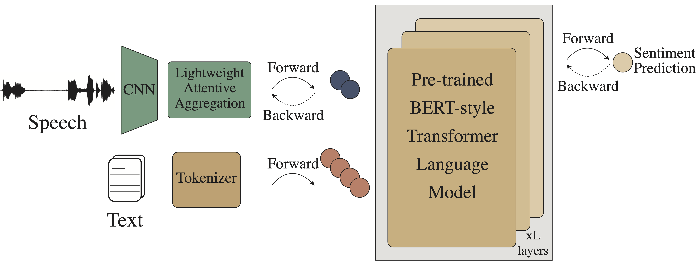

|
Mehdi Arjmand
About
I am interested in Multimodal Machine Learning, Multimodal Language Analysis, and Optimization.
Currently, I am an research assistant working under the supervision of Professor Hadi Moradi on Multimodal Language Analysis.
CV available upon request.
Interests
Multimodal Machine Learning.
Multimodal Language Analysis (Multimodal Sentiment Analysis, Emotion Recognition).
Linguistics Technology (NLP, Speech).
Affective Computing.
Self-Supervised Representation Learning (Transformer-based, Computer Vision SSL).
Convex Optimization.
Education
- B. Sc. in Electrical Engineering (Minor Degree in Computer Engineering) ( Sep. 2016 - Sep. 2021 ),
University of Tehran, School of ECE, Tehran, Iran.
Final thesis: TEASEL: a Transformer-Based Speech-Prefixed Language Model
Publications
|
 |
Mehdi Arjmand, Mohammad Javad Dousti, and Hadi Moradi, “TEASEL: a Transformer-Based Speech-Prefixed Language Model”, arXiv preprint arXiv:2109.05522, 2021
Website | Arxiv | Code
|
|